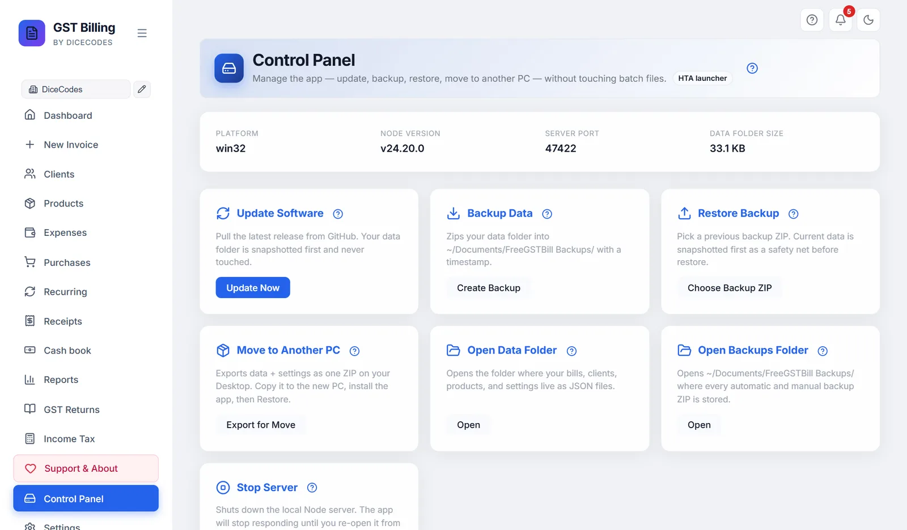

Control Panel
Update, back up, restore, move to another PC, open your folders, and stop the app, from inside the app.
#What it is
Control Panel in the sidebar does the launcher's jobs without leaving the app. At the top it shows your system, Node.js version, the port the app runs on, and how much space your data takes.
#The buttons
| Card | Button | What it does |
|---|---|---|
| Update Software | Update Now | Downloads the latest version. Your data is backed up first and never touched. |
| Backup Data | Create Backup | Saves your data as a dated ZIP in Documents\Reazix Billing Backups. |
| Restore Backup | Choose Backup ZIP | Pick a backup ZIP to restore. What you have now is saved first, as a safety net. |
| Move to Another PC | Export for Move | Saves your data and settings as one ZIP on your Desktop. See Moving to a new computer. |
| Open Data Folder | Open | Opens the folder with your bills, clients, products and settings. |
| Open Backups Folder | Open | Opens Documents\Reazix Billing Backups. |
| Restart the App | Restart | Restarts the app when something is not working, then reloads the page. |
| Stop Server | Stop Server | Stops the app. Open it again from the launcher or shortcut. |
| Remove the App | Remove… | Uninstalls the app. You tick whether your data, PDFs and backups are deleted too. Where it cannot remove itself, the button reads How to remove it and opens the steps. |
After each action a panel shows whether it worked, with the details underneath if something went wrong. See The result panel. Each button is explained step by step below.

#Each button in detail
One section per card: what it does, when to use it, what to click, and what to do if something looks wrong. Nothing here deletes your bills, clients or products. Anything that changes your data saves a copy first.
#Update Software
What it does. Downloads the newest version from billing.reazix.com and puts it in place of the old one. Your data folder is not changed.
When to use it. When a new version is out or a problem you reported has been fixed. You need internet.
- Click Update Now. The button shows Updating...; wait until it finishes. It can take a few minutes.
- Windows: a black window opens. It first saves a backup of your data,
pre-update-date.zip, inDocuments\Reazix Billing Backups, then downloads and applies the update. It ends with [OK] Update complete! - Mac and Linux: it does the same, saving the backup as
pre-update-date.tar.gzinDocuments/Reazix Billing Backups. If you already have the newest version it says so and changes nothing. It ends with [OK] Update complete and the old and new version numbers. - Restart the app to run the new version: click Stop Server (see Stop Server), then open the app again from its icon or launcher. Then press Ctrl + F5 (Mac: ⌘ + Shift + R).
Is it safe? Yes. Your data is backed up first and the update never touches the data folder. On Mac and Linux, if the update fails half way, the old app files are put back.
Something wrong?
- "Update complete" but the old version still shows: the old version is still there.
- An error, or "could not reach billing.reazix.com": an update went wrong. On Linux or Mac also see the Linux update stopped.
- The button says Not available here: scripts not found.
#Backup Data
What it does. Saves all your bills, clients, products and settings as one dated ZIP file, backup-date_time.zip, in the Documents\Reazix Billing Backups folder (Mac and Linux: Documents/Reazix Billing Backups).
When to use it. Before a big change, at the end of the month, or any time you want a copy to keep on a pen drive. The app also makes its own daily backup; this is an extra one at a moment you choose.
- Click Create Backup. It shows Backing up... for a moment.
- The result panel below says Backup - OK, with the file name and size in its output. A folder window usually opens with the new file shown.
- Copy that ZIP to a pen drive or cloud storage so it survives if this computer breaks. Open Backups Folder on the Control Panel opens the folder.
Is it safe? Yes. It only reads your data and writes a new file. Old backups are never replaced.
Something wrong? If it says "No data folder found - nothing to back up", or fails with a disk or permission message, see a backup or restore failed, the disk is full and the app is not allowed to write. More ways to back up: Backups and updates.
#Restore Backup
What it does. Replaces the data in the app with the data from a backup ZIP you choose.
When to use it. After moving to a new computer, or to go back to how things were on an earlier day. It works with ZIPs made by Create Backup or Export for Move.
- Windows. Click Choose Backup ZIP. A file window opens in your
Reazix Billing Backupsfolder. Pick the ZIP and click Open. (Close the window to cancel; nothing changes.) - The app first saves what you have now as
pre-restore-date.zipin the same folder. This is your way back if you chose the wrong file. - It then replaces the data with the backup's contents and shows [OK] Restore complete! Press Enter to close the black window.
- Restart the app (Stop Server, then open it again) to see the restored data.
Mac and Linux: this button says Not available here. To bring data back there, use Settings, Backup Management, Import Backup with a file saved by Export Backup (see Export and import).
Is it safe? Your current data is replaced by the backup, so what you entered after that backup was made will not be there. That is why a pre-restore copy is saved first. Keep it until you are happy.
Something wrong? See a backup or restore failed. If the old data still shows, restart the app; if it will not open, see the server has not answered.
#Move to Another PC
What it does. Saves your data as one ZIP on your Desktop named MOVE-ReazixBilling-date_time.zip, ready to carry to a new computer.
When to use it. When you buy a new computer, or want the same books on a second one.
- Windows: click Export for Move. A black window shows the progress and the size, then a folder window opens with the ZIP highlighted on your Desktop.
- Copy the ZIP to a pen drive, or send it to yourself by email or cloud storage.
- On the new PC, install the app (Install guide), open the Control Panel and use Choose Backup ZIP (Restore Backup) to pick this file.
Mac and Linux: this button says Not available here. Follow Moving to a new computer instead.
Is it safe? Yes. It only makes a copy; your data here stays as it is. Keep the ZIP private, since it holds your business records.
Something wrong? If it says "No data folder to export", or the disk is full, see the disk is full; for the restore step see a backup or restore failed.
#Restart the App
What it does. Turns the app off and on again in a few seconds, then reloads the page by itself.
When to use it. When something is not working: a page will not load, a button does nothing, or after an update or restore.
- Save any bill you are typing. Then click Restart. The button shows Restarting....
- After a few seconds the page reloads with the app running again, on the same address.
Is it safe? Yes. Everything is saved as you work. A bill still being typed and not saved is not kept.
Something wrong? If it says the app did not come back within 30 seconds, open it again from its Desktop icon or launcher. See Failed to fetch, App Not Running.
#Stop Server
What it does. Turns the app off. The page stops answering until you open the app again.
When to use it. After an update or restore, so the new version or data is loaded when you start it again. Also when the app seems stuck, or you want to shut it down cleanly.
- Finish and save any bill you are typing. Then click Stop Server.
- Windows: it finds the app's process on your port and ends it. Mac and Linux: the app stops itself a moment after replying; the result panel says Stopped. Open the app again from its icon or launcher.
- The browser page will then show errors such as "Failed to fetch". That is normal.
- Open the app again: double-click Reazix Billing on your Desktop (Mac: Reazix Billing - MAC; Linux: your start command).
Is it safe? Yes. Everything is saved as you work, so nothing already saved is lost. A bill still being typed and not saved is not kept. If the app runs as a service or in Docker, it may start again by itself.
Something wrong? If it will not start again, see Failed to fetch, App Not Running and the server has not answered. Mac and Linux: Mac, Linux and NAS.
#Remove the App
What it does. Uninstalls Reazix Billing from this computer in one go: the app, its Desktop and Start-menu icons (Mac: the app in Applications; Linux: the menu entry) and the start-with-computer entry. You choose what else goes.
- Click Remove…. A list opens below the cards. (On Windows the launcher window has the same: More options → Remove the app....)
- Tick what to delete as well. Nothing is ticked at first, so by default only the program goes and your books stay:
- My invoices, clients, products and settings: the data folder, with the daily backups inside it.
- Saved invoice PDFs: the
Saved InvoicesandTrashfolders. - All backup files in
Documents\Reazix Billing Backups.
- Click Remove the app. If your data is ticked, it asks once more. The app closes and the page says it is being removed. Close the window.
Is it safe? If you delete your data but keep the backups, a last copy, before-removal-date.zip (Mac and Linux: .tar.gz), is saved in Documents\Reazix Billing Backups first. If that copy cannot be made, your data is kept. Whatever you keep stays in the app folder; install the app into the same folder again and it is all there. Other files you put in the app folder yourself are not touched, and neither is a second backup folder you chose in Settings.
Something wrong? If the button reads How to remove it, the app is running from source code or an old ZIP and cannot remove itself; the button opens Removing the app with the other ways. On Windows, if a file is in use, a message names the folder to delete by hand after a restart.
#The result panel
After you click an action, a panel appears at the bottom with a green tick and OK, or a red mark and Failed, next to the action's name. A short pop-up message appears too.
- Output: what the script printed, such as where a backup file was saved.
- Errors: shown only when something went wrong. Copy this text when you report a problem.
- A red line of text: the reason in plain words, for example that the script is not in the app folder.
The panel is cleared each time you click another button, so it only describes the last action.
Something wrong? Check "Not available here", a backup or restore failed and an update went wrong.
#"Update and backup scripts not found"
The Control Panel runs scripts that come with the downloaded ZIP, in the _system folder. This message appears when they are missing, for example when the app was started from source code or copied without them. Install from the downloaded ZIP to get them, or use Export Backup in Settings for your data.
Versions 1.10.44 to 1.10.71 showed this message, then called "Launcher scripts not detected", on every installed copy by mistake. Update to 1.10.72 or later using the launcher's Update to the latest version.
On Linux and macOS only Update and Backup have scripts, so Restore, Move and Stop show Not available here.